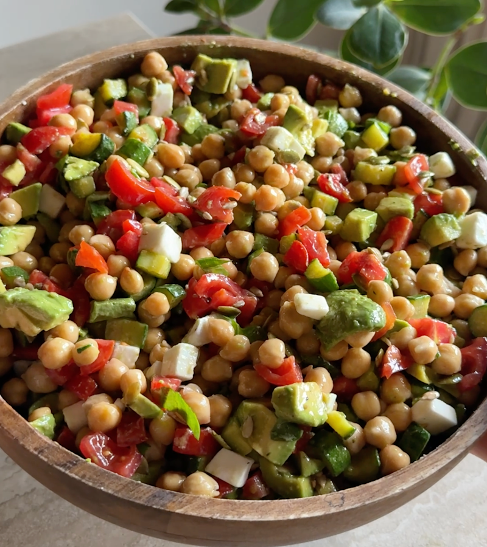

Home
Spring salad

Description
The other day for lunch I prepared this fresh, simple and nutritious salad that I will never get tired of eating,
you absolutely have to try it too!
Ingredients
- 4 Zucchini
- 6/8 Cherry tomatoes
- 1 Block of vegetable feta
- 2 Avocados
- 600g Chickpeas already cooked
- 1 Clove of garlic
- q.b Extra virgin olive oil
- q.b. Salt
- q.b Pepper
- q.b Lemon zest
- q.b Lemon juice
- 1 Handful pumpkin seeds
- 1 Handful sunflower seeds
Steps
- Cut the courgettes into slices and sauté them in a pan with a little oil, a clove of garlic and a little
salt for about 10 minutes.
- Cut the courgettes into slices and sauté them in a pan with a little oil, a clove of garlic and a little
salt for about 10 minutes.
- Also cut the vegetable feta into cubes and set aside.
- Finally, remove the pulp from the avocados and season with salt, oil, pepper, lemon zest and juice.
- Now assemble your salad starting with the cooked chickpeas and continuing with the cherry tomatoes, the
vegetable feta, the courgettes and the avocado. Finish with some pumpkin and sunflower seeds, a sprinkling
of pepper and some roughly chopped basil.
- Mix well to combine all the ingredients and adjust the salt if necessary.